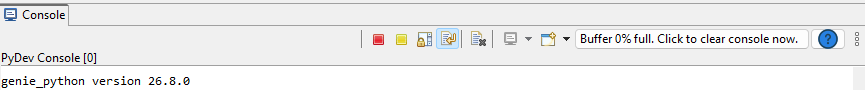
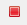
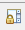
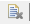
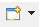

Scripting View
The Scripting-View displays a Python console, allowing you to load and execute Python or genie_python scripts. Note: Scripts running in the Scripting View are independent of scripts running on the Script Server and independent of scripts running in other consoles and clients.
Multiple Consoles and Views
The IBEX Gui supports both multiple consoles and multiple views on those consoles. You should think of this as multiple versions of genie_python, each running in a console, which you can view through one or many windows. To see how to utilise this read the following toolbar section.
Tool Bar
The tools bar at the top of every python console view looks like:

From left to right, the buttons are:

Stop the whole console. This will stop the current script and remove the console from view, useful if you are running multiple consoles.Interrupt (via
KeyboardInterrupt). This is useful if you realise that the script is doing something wrong. This can also be done by pressing Ctrl+C
Toggle scroll-lock, which prevents new console output from scrolling the scripting window. This is useful if you need to inspect or copy from previous script output, without interrupting the script.Toggle word-wrap: with word-wrap disabled, long output lines will cause a horizontal scroll-bar to appear. With this option enabled, long output lines will instead be wrapped onto new lines.

Clear the console. This will remove all the text from the window, be careful though as this WON’T stop the current script.Switch to a different console. This will be greyed out if you only have one console running.

Start a new console or a new view. You can use this to start a new console by selecting “PyDev Console”. Be careful: having multiple consoles running control scripts simultaneously will lead to the consoles ‘fighting’ for control of the instrument.Clear the console. This button also displays the current memory usage of all the output in the console.
Open this help page.